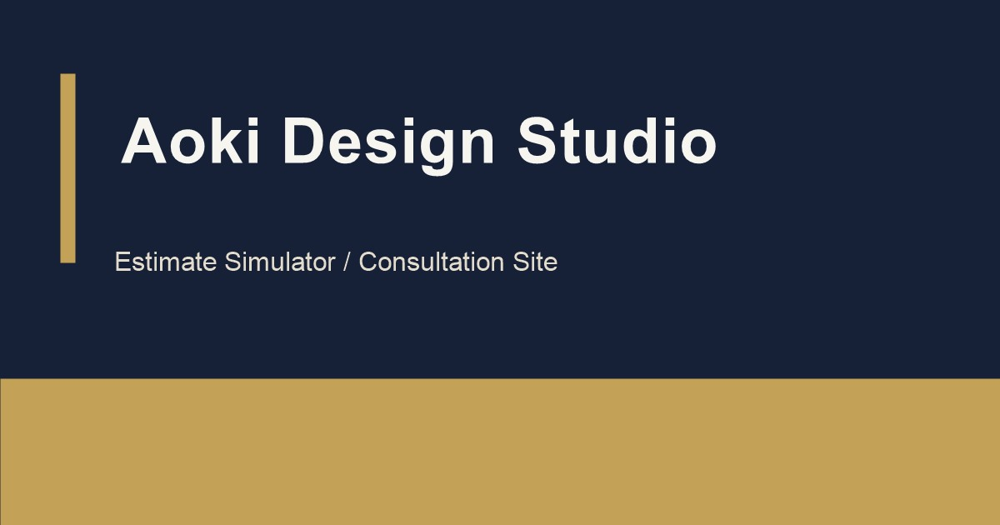

Proof
証明したい力
入力状態、概算結果、比較、共有までをひとつの UI としてまとめる設計力と、Vanilla JS での状態整理を見せることです。
相談前の曖昧さを、見積・比較・共有の一画面体験でほどく掲載用デモ。
制作相談の初期段階では、何を頼みたいかは決まっていても、費用感が曖昧なまま止まりやすくなります。 この作品では、概算見積、比較、PDF 保存、URL 共有、相談導線を分断させず、 自主制作の掲載用デモとしてひとつの画面体験にまとめました。

Note
実在案件の成果紹介ではなく、相談前の情報整理をどう UI に落とし込むかを示す掲載用デモとして位置づけています。
Background
制作相談は、要件がまだ固まっていない段階ほど動き出しにくく、フォームだけでは何を伝えればよいか分からないことがあります。
そこでこの作品では、概算を出すだけで終わらせず、比較して、保存して、共有して、そのまま相談できるところまで ひと続きの流れとして見せることを目的にしました。
この題材で見せたいこと
Purpose
Proof
入力状態、概算結果、比較、共有までをひとつの UI としてまとめる設計力と、Vanilla JS での状態整理を見せることです。
Audience
制作物の費用感を知りたい人、社内共有用のたたき台を先に作りたい人、相談前に情報を整理したい人を想定しています。
Information Architecture
01
何を見積もっているのかが曖昧なまま数字が出ないよう、入力条件や想定範囲を先に理解できる順に並べます。
02
総額だけでなく、比較のための判断材料がすぐ読めるよう、要点を近い距離で確認できる構成を優先しています。
03
結果を出した後に別ページへ飛ばず、その場で比較、URL 共有、PDF 保存へつながる流れを想定しました。
04
シミュレーションで終わらず、結果を持ったまま問い合わせへ移れる設計にすることで、次の行動までを明確にしています。
Design Direction
Air
プロダクトらしい落ち着いたダークトーンを基準にしつつ、緊張感が強くなりすぎない温度に整える方針です。
Type
説明文よりも数値や条件の確認がしやすいことを優先し、結果エリアの読み取りやすさを重視しています。
Space
入力群と結果群の距離を明確にしながら、長いフォームに見えすぎないようリズムを持たせる構成を意識しました。
Contrast
合計額、比較要点、共有導線のような意思決定に直結する要素だけに強さを寄せ、ノイズを抑えています。
Flow
入力する、結果を見る、残す、相談する、という順で気持ちよく進めるよう、操作の文脈を途切れさせないことを重視しました。
Implementation
State
概算結果だけを別物にせず、入力条件、比較対象、共有状態までを連続した状態として扱う前提で設計しています。
URL Sync
検討内容をそのまま渡せるよう、共有時に条件が再現しやすい URL 同期を重要な実装要素として扱っています。
Output
結果を読んだ直後に保存や比較へ移れるよう、jsPDF を使った出力導線も含めて一連の操作としてまとめています。
Consultation
EmailJS や相談フォーム連携の前提を持たせ、見積もり結果だけで終わらず次の行動へ渡しやすい形を意識しました。
Expected Effect
01
費用感が見えないことによる足踏みを和らげ、問い合わせ前に最低限のイメージを持てる状態を狙っています。
02
URL 共有や PDF 保存を近くに置くことで、検討内容を持ち帰って話しやすくすることを意図しています。
03
結果だけ出して終わる UI ではなく、次の相談行動まで自然につながる構造にすることを重視しました。
Tech Stack
画面の見た目よりも、入力、計算、比較、共有、相談という連続した体験を Vanilla JavaScript でどこまで整理できるかを主題にしています。